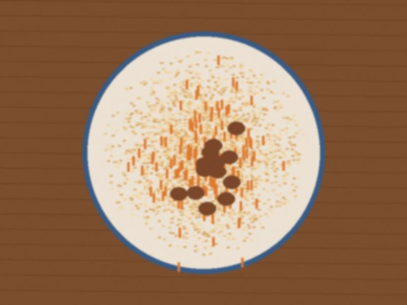

Lamb with tarragon for our neighbours' Easter
24 April 2016 · Holidays

The cauldron at dawn. The lamb is under the tarragon. You do not see the lamb.We are not the same church on our street, but we are the same street. Every year the neighbours with the Easter vigil come home at dawn, hungry, and the women who did not go to the vigil have the cauldron ready. This is the way.
Lamb, 3 kg in big pieces, bones too. Fat in the kazan. Meat, onions, a lot of fresh tarragon, a handful of green cherry plums if you find them (a sour apple if not), salt, a glass of water. Lid. Small fire, two hours. Do not stir, shake the pot. At the end more tarragon and a spoon of kamra if somebody brought it.
They bring eggs painted red. I bring the lamb. Nobody says "who is better", we only say "pass the bread".
♥ 80
0 comments
Comments are closed.